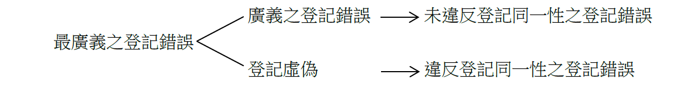
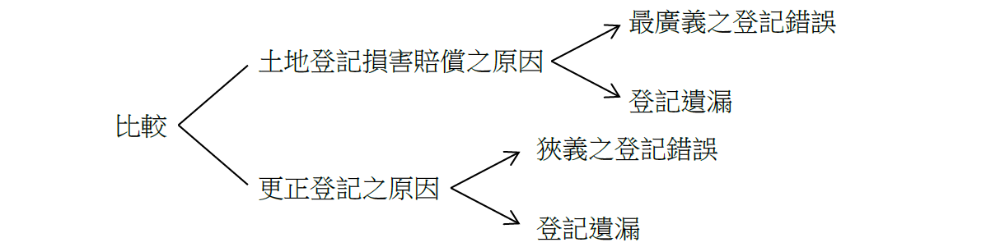

主題精選：登記錯誤¶
共收錄 20 篇文章。
1. 更正登記應不妨害原登記同一性之相關案例¶
發布日期: 2024-08-20
內文¶
案例：
甲主張其曾祖父乙於日據時期與A市公所簽訂「以地易地」之承諾書，由乙將所有之K地與A市所有同地段之L地約300坪土地互易移轉；嗣L地迭經分割，乙因互易取得並入住之土地經測量即在L土地範圍內，是依上述土地互易承諾書，此部分土地應屬乙所有，惟辦理總登記時，卻登記土地所有權人為A市，爰依土地法第69條及土地登記規則第144條規定，請求地政事務所辦理更正登記或塗銷登記，將該部分土地移轉予甲等人。試問是否有理由？
[圖片1]
判決重點：
-
按土地登記之目的，在於確立地籍，保護產權，藉以維持不動產交易安全，並為推行或制定土地政策之依據。故已登記完畢之土地權利，若登記錯誤、遺漏或虛偽，應予以更正，以杜絕弊端，並有助公示原則之確立。
-
土地法第69條所稱「登記錯誤之更正」，以不涉及私權爭執，且不妨害原登記之同一性者為限，亦即僅限「登記原因證明文件所載之內容不符」或「應登記事項漏未登記」之情形而言，並未涉及權利主體之變動，否則根據土地登記規則第7條規定，必須經由司法審判程序，始得塗銷或變更。殊非可依規定申請地政機關更正登記，以變更原登記所示之法律關係。
-
基此法理，內政部訂頒之更正登記法令補充規定第6點規定：「申請更正登記，如更正登記後之權利主體、種類、範圍或標的與原登記原因證明文件所載不符者，有違登記之同一性，應不予受理。」第7點規定：「更正登記以不妨害原登記之同一性為限，若登記以外之人對於登記所示之法律關係有所爭執，則應訴由司法機關審判，以資解決。」亦明揭上述意旨。
-
是更正登記，無論依職權或依聲請，均以不妨害原登記之同一性為限。亦即更正前後之標的物、權利主體及法律關係，均須相同。若更正登記之結果，使原登記關係人之土地權利發生變動或損害，則已妨害原登記之同一性，不在更正登記之範圍內。
-
因此，甲主張其曾祖父乙於日據時期與A市公所就L地簽訂承諾書互易移轉一節，因系爭土地現所有權人為A市，管理人為A市公所，甲請求將系爭土地所有權人更正登記為甲等人，顯已違反登記同一性之要件，於法不合。
資料來源： 臺中高等行政法院109年度訴字第195號判決 最高行政法院110年度上字第128號裁定
文章圖片¶

注：本文圖片存放於 ./images/ 目錄下
2. 登記漏誤之救濟方法¶
發布日期: 2024-05-30
內文¶
土地登記規則第7條規定：「依本規則登記之土地權利，……非經法院判 決塗銷確定，登記機關不得為塗銷登記。」又，土地法第69條規定，辦理更正登記之程序。另於土地登記規則第144條規定，登記機關辦理塗銷登記之前提要件。請比較此三者規定適用情境與關係，及其重要之異同。
【112地方政府】
【解答】
• (一) 適用情境：
1.
土地法第69條更正登記之適用情境：
• (1) 登記錯誤：指登記事項與登記原因證明文件所載之內容不符者 (2)登記遺漏：指應登記事項而漏未登記者。
此外，本項更正登記不得違反原登記之同一性（即不得變更原登記之法律關係）。
2.
土地登記規則第144條塗銷登記之適用情境：
• (1) 偽造證明文件：登記證明文件經該主管機關認定係屬偽造。 (2)錯誤登記：純屬登記機關之疏失而錯誤之登記。
此外，本項塗銷登記應於第三人取得該土地權利之新登記前，始得為之。
- 土地登記規則第7條法院判決塗銷登記之適用情境：依土地登記規則登記之土地權利，除土地登記規則另有規定外，非經法院判決塗銷確定，登記機關不得為塗銷登記。換言之，除土地登記規則另有規定由登記機關逕行塗銷登記（如土地登記規則第144條即是）外，餘皆應由法院判決塗銷，始得辦理塗銷登記。
• (二) 三者關係：
1.
土地法第69條更正登記與土地登記規則第144條塗銷登記，兩者之原因均有「登記錯誤」一項，其不同如下：
• (1) 如經查明原准予登記之處分純係登記機關疏失而為之違法行政處分，應以「塗銷登記」處理。 (2)如准予登記之行政處分並未違誤，僅登記機關辦理登記時未依登記原因證明文件所載之內容登記而造成登記事項與登記原因證明文件所載之內容不符，則應以「更正登記」處理。
- 土地登記之漏誤應先適用土地法第69條更正登記及土地登記規則第144條塗銷登記。在不能經由前揭辦理更正登記或塗銷登記，則訴請法院判決塗銷。
• (三) 三者之異同：
- 相同點：三者皆在解決土地登記之漏誤。
2.
相異點：
• (1) 程序不同：土地法第69條更正登記及土地登記規則第144條塗銷登記由地政機關辦理，無須訴請法院判決。土地登記規則第7條塗銷登記，須由法院判決塗銷。 (2)原因不同：土地法第69條更正登記之原因為登記錯誤及登記遺漏。土地登記規則第144條塗銷登記之原因為偽造證明文件及錯誤登記。土地登記規則第7條法院判決塗銷，未限定原因。
- 條件不同：土地法第69條更正登記之條件係不得違反原登記之同一性。土地登記規則第144條塗銷登記之條件應於第三人取得該土地權利之新登記。土地登記規則第7條法院判決塗銷，無上開二項條件。
注：本文圖片存放於 ./images/ 目錄下
3. 土地登記損害賠償請求救濟之程序¶
發布日期: 2024-05-23
內文¶
土地法第43條規定，土地登記具有「絕對效力」。請說明其保護對象為何？當發生登記錯誤、遺漏或虛偽，真正權利人應如何維護其權益？如產生損害賠償，則請依國家賠償法相關規定，說明請求救濟之程序。
【112身心障礙】
【解答】
• (一) 登記絶對效力之保護對象：土地法第43條：「依本法所為之登記，有絕對效力。」意謂善意第三人因信賴登記所取得之權利，具有不可推翻之效力。準此，登記絶對效力之保護對象為善意第三人。
• (二) 真正權利人維護權益之方法：
- 更正登記：真正權利人於登記完畢後，發現登記錯誤或遺漏時，得向地政機關申請更正登記。惟更正登記不得違反原登記之同一性（即不得變更原登記之法律關係）。
2.
塗銷登記：
• (1) 在未有第三人取得權利之新登記前，真正權利人得訴請法院塗銷登記名義人。
• (2) 登記之土地權利，有下列情形之一者，於第三人取得該土地權利之新登記前，登記機關得於報經直轄市或縣（市）地政機關查明核准後塗銷之： ①登記證明文件經該主管機關認定係屬偽造。 ②純屬登記機關之疏失而錯誤之登記。
- 損害賠償：因登記錯誤遺漏或虛偽致受損害者，由該地政機關負損害賠償責任。但該地政機關證明其原因應歸責於受害人時，不在此限。
• (三) 請求救濟之程序：
-
請求：依國家賠償法請求損害賠償時，應先以書面向賠償義務機關請求之。
-
協議：賠償義務機關對於前項請求，應即與請求權人協議。協議成立時，應作成協議書，該項協議書得為執行名義。應注意者，協議為提起訴訟之先行必要程序。
-
訴訟：賠償義務機關拒絕賠償，或自提出請求之日起逾三十日不開始協議，或自開始協議之日起逾六十日協議不成立時，請求權人得提起損害賠償之訴。但已依行政訴訟法規定，附帶請求損害賠償者，就同一原因事實，不得更行起訴。
注：本文圖片存放於 ./images/ 目錄下
4. 登記錯誤、登記遺漏及登記虛偽之闡述¶
發布日期: 2024-04-04
內文¶
土地法第68條第1項規定：「因登記錯誤遺漏或虛偽致受損害者，由該地政機關負損害賠償責任。但該地政機關證明其原因應歸責於受害人時，不在此限。」又，土地法第69條規定：「登記人員或利害關係人，於登記完畢後，發見登記錯誤或遺漏時，非以書面聲請該管上級機關查明核准後，不得更正。但登記錯誤或遺漏，純屬登記人員記載時之疏忽，並有原始登記原因證明文件可稽者，由登記機關逕行更正之。」準此，土地登記損害賠償之原因有三：①登記錯誤；②登記遺漏；③登記虛偽。另，更正登記之原因有二：①登記錯誤；②登記遺漏。換言之，土地登記損害賠償之原因有「登記虛偽」，更正登記之原因無「登記虛偽」
• (一) 登記錯誤之意涵：登記錯誤可分為最廣義之登記錯誤、廣義之登記錯誤及狹義之登記錯誤。
-
最廣義之登記錯誤：凡登記事項與真實情形不符者，均屬之。
-
廣義之登記錯誤：指未違反登記同一性之登記錯誤。所稱登記同一性，指土地登記之同一權利主體、同一權利種類、同一權利範圍及同一權利標的而言。
-
狹義之登記錯誤：指未違反登記同一性之登記錯誤，且登記事項與登記原因證明文件不符。
• (二) 登記虛偽之意涵：指違反登記同一性之登記錯誤。最廣義登記錯誤包括廣義之登記錯誤及登記虛偽二項。
[圖片1]
• (三) 結論：
-
土地法第68條（土地登記損害賠償）之登記錯誤，指廣義之登記錯誤。土地法第69條（更正登記）之登記錯誤，指狹義之登記錯誤。
-
土地法第68條所定登記錯誤（指廣義之登記錯誤）與登記虛偽，二者結合而為最廣義之登記錯誤。準此，土地登記損害賠償之原因有二： (1)最廣義之登記錯誤：指登記事項與真實情形不符者。 (2)登記遺漏：指應登記事項而漏未登記者。
-
土地法第69條所定登記錯誤，指狹義之登記錯誤。準此，更正登記之原因有二： (1)狹義之登記錯誤：指未違反登記同一性之登記錯誤，且登記事項與登記原因證明文件所載之內容不符者。 (2)登記遺漏：指應登記事項而漏未登記者。
[圖片2]
- 土地登記規則第13條所定義之登記錯誤（即登記事項與登記原因證明文件所載之內容不符），實際上僅適用於土地法第69條之更正登記。土地法第68條之土地登記損害賠償，不以此定義為限。
文章圖片¶


注：本文圖片存放於 ./images/ 目錄下
5. 登記錯誤之損害賠償：高爾夫球場土地重複登錄賠償案（112國字第8號判決）¶
發布日期: 2023-11-21
內文¶
今天專欄主要彙整有關登記錯誤及土地法第68條損害賠償之實務案例
首先，請先參考以下新聞：
高球場土地 搞烏龍登錯 竹北地政重複登錄 判賠134萬 - 社會 - 自由時報電子報 (ltn.com.tw)（2023/11/17）
此新聞案例係引自民國112年11月10日臺灣新竹地方法院112年度國字第8號判決，茲整理重點如下：
• 一、案例事實
甲公司為經營高爾夫球場，於91年1月以每平方公尺1,100元，向財政部國有財產署購買共13筆土地，並於91年3月完成所有權移轉登記。嗣教育部體育署為調查國內各高爾夫球場相關資訊，發現甲使用面積與原核定面積不符。惟經縣府審查發現陳稱829地號土地於80年辦理第一次登記，因釘圖錯誤於84年重複登錄834地號土地；836地號土地亦於80年辦理第一次登記，因釘圖錯誤於84年重複登錄844地號土地等情，亦即834地號土地位置與829地號土地部分重疊而重複登錄；844地號土地位置與836地號土地部分重疊而重複登錄（即同一塊土地被登簿兩次＝新聞所說的「一地兩簿」），故地政事務所決定截止登載834及844地號土地，並於111年7月撤銷之。而後甲公司遂向該地所提起損害賠償訴訟。
• 二、判決理由
按因登記錯誤遺漏或虛偽致受損害者，由該地政機關負損害賠償責任，但該地政機關證明其原因應歸責於受害人時，不在此限，土地法第68條第1項定有明文。其立法意旨，在貫徹土地登記之公示性及公信力，兼顧交易安全及權利人之權利保障，該條所稱之受害人，自不以得終局保有登記權利之人為限；如土地權利人或登記名義人因地政機關就土地登記之錯誤、遺漏或虛偽致受損害時，除非該地政機關能證明其原因應歸責於受害人，否則即應負損害賠償責任，僅賠償之範圍以同條第2項規定為限而已（最高法院102年度台上字第1108號、106年度台上字第199號、108年度台上字第2494號判決意旨參照）。又土地登記規則第13條規定：「土地法第68條第1項及第69條所稱登記錯誤，係指登記事項與登記原因證明文件所載之內容不符者；所稱遺漏，係指應登記事項而漏未登記者」，乃屬例示規定，非以此為限，凡登記之事項與真實不符者俱屬之。即應解為如登記錯誤、遺漏或虛偽係因不可歸責於受害人之事由所致者，地政機關均須負損害賠償責任。苟解為僅具該條所定情事者，地政機關始負損害賠償責任，將限縮土地法第68條第1項之適用範圍，而有危害交易安全及損害權利人權利之虞，難謂與該條之立法精神無違（最高法院91年度台上字第1172號判決意旨參照）。次按因登記錯誤遺漏或虛偽致受損害者，除非該地政機關能證明其原因應歸責於受害人，否則即應負損害賠償責任，不以登記人員有故意或過失為要件，此亦經最高法院110年度台上大字第3017號裁定明揭斯旨。
此外，按土地法第68條第1、2項之規定，係就職司土地登記事務之公務員不法侵害人民權利，由該機關負損害賠償責任之規定，屬國家賠償之特別規定，故人民因不動產登記錯誤遺漏或虛偽致受損害，而請求地政機關賠償時，該地政機關應為負賠償責任及其賠償範圍，即應依該條規定，不適用國家賠償法第2條規定（最高法院98年度台上字第1977號、100年度台上字第1727號、1769號判決意旨參照）。換言之，土地法第68條之規定，係國家賠償法之特別法，依國家賠償法第6條之規定，自應優先適用之。查本件既已該當土地法第68條第1項所稱「登記錯誤」之情事，就甲公司所受損害，自應由地政機關負賠償責任。
經查，834、844地號土地辦理第一次登記後，地政事務所實際上未再就829地號、836地號土地，核算因分割後而減少之面積，並就剩餘面積再行辦理更正登記。834、844地號與829、836地號土地之部分地籍重疊，而看似分割自829地號、836地號土地之情形，此乃係因829地號、836地號土地為第一次登記後，未在地籍圖上釘正，致84年間誤將829地號、836地號之部分土地另劃設出來並進行重複登錄，堪認地政事務所就834、844地號土地所辦理之第一次登記，自始即為錯誤登記，而該當於土地法第68條第1項所規定「登記錯誤」之情事。
基此，地政事務所既執掌其轄區內土地地籍登記之業務，就土地辦理第一次登記時，本應審慎查核所登記土地在地籍圖上之位置、範圍、是否已為有地籍登記等事項，竟疏未注意及此，於829地號、836地號土地分別於80年、84年間辦理第一次登記後，就上開早已經辦理登記之土地部分範圍重複再為834、844地號土地之第一次登記，致出現登記錯誤之情形，使甲公司因信賴上開土地登記之結果，誤以為本不應存在之834、844地號土地係確實存在，而向國有財產署買受，嗣後卻遭地政事務所以釘圖錯誤為由撤銷登記，至受有土地登記權利喪失之損害，並無可歸責事由，地政事務所自應依土地法第68條之規定對甲公司所受損害負賠償之責。
按土地法第68條第1項之損害賠償，不得超過受損害時之價值，亦為土地法第68條第2項所明定。依上開規定，甲公司得請求地政事務所之損害賠償範圍，應以834、844地號土地辦理撤銷登記時之價值為限，是審酌該兩筆土地於111年間之公告地價均為每平方公尺1,500元，而甲公司主張以其購買834、844地號土地時之價格即每平方公尺1,100元計算其因登記權利喪失所受之損害，並未逾越該等土地辦理撤銷時之價值，應屬合理。從而，甲公司依上開規定，請求地政事務所賠償1,344,200元【計算式：1,100元×（834地號土地面積1,056平方公尺＋844地號土地面積166平方公尺）＝1,344,200元】，自屬有據，應予准許。
• 三、本案例重點
• (一) 登記錯誤之類型與定義。
• (二) 因登記不實受有損害之類型。
• (三) 土地法登記不實之損害賠償為無過失責任，且優先於國賠法適用。
• (四) 錯誤登記予以撤銷。
• (五) 賠償以損害時之價值為限。¶
注：本文圖片存放於 ./images/ 目錄下
6. 重測錯誤之損害賠償：台北中山醫院賠償案（111年度重國字第17號）¶
發布日期: 2023-11-14
內文¶
同學，我們台中才剛上到的測量錯誤是否得依土地法第68條要求賠償最新案例～
首先，可以參考以下兩則新聞
北市「貴族醫院」土地面積少算8.47坪 大安地政事務所要國賠1558萬元 | 法律前線 | 社會 | 聯合新聞網 (udn.com)
幫「貴族醫院」登記土地少算8.47坪 大安地政事務所一審國賠1558萬 (yahoo.com)
案例事實
-
臺北市某A地為原中山醫院合夥人所有，渠等同意將A地之應有部分移轉予中山醫療社團法人（以下簡稱中山醫院）續為醫療使用。中山醫院資本額為529,634,602元，所有A地之應有部分為274/285，登記面積則為1,371平方公尺。
-
詎大安地政事務所（以下簡稱大安地政）於110年10月18日逕行辦理面積更正，更正後A地登記面積為1,343平方公尺，較原登記面積短少28平方公尺，降低中山醫院之實定資本額及必要財產之市場公允評價（即資本額將低於529,634,602元），因而受有損害。
-
其中，更正登記原因係大安地政辦理逾期未辦繼承登記土地圖、簿面積不符清理計畫時，察覺A地登記面積與計算面積相較，超出法定容許誤差，經查明後，主要因於66年間辦理地籍圖重測時面積計算錯誤所致，屬於因原測量錯誤純係技術引起者，依地籍測量實施規則第232條規定，辦理更正登記。
-
綜上，因A地登記面積減少28平方公尺，以當期公告土地現值計算損害賠償數額，大安地政應賠償15,586,274元，中山醫療社團法人爰依土地法第68條第1項提起訴訟。
判決理由整理
• (一) A地登記面積由1,371平方公尺更正為1,343平方公尺，係大安地政所屬公務員登記錯誤所致，中山醫院因而受有損害：
-
登記機關對於登記不實負無過失賠償責任 因登記錯誤遺漏或虛偽致受損害者，由該地政機關負損害賠償責任。但該地政機關證明其原因應歸責於受害人時，不在此限，土地法第68條第1項定有明文。次按因登記錯誤遺漏或虛偽致受損害者，除非該地政機關能證明其原因應歸責於受害人，否則即應負損害賠償責任，不以登記人員有故意或過失為要件。土地法第68條第1項前段規定，乃以貫徹土地登記之公示性及公信力，並保護權利人之權利與維持交易安全為規範目的。該規定文義既未明示以登記人員之故意或過失為要件，原則上自應由地政機關就登記不實之結果，負無過失之賠償責任（最高法院110年度台上字第3017號判決意旨參照）。（這就是我們上課特別提到的無過失賠償責任！）
-
除非可歸責於受害人方可免賠 A地登記面積錯誤，係因大安地政於66年間辦理地籍圖重測時面積計算結果有誤所致，大安地政復未舉證證明上開登記面積短少之原因係可歸責於中山醫院，揆諸上開法條及裁判說明，自應負賠償之責。
-
依法辦理面積更正登記並未免其賠償責任 大安地政於比對建物測量成果圖之平面圖發現面積有誤時，固得依地籍測量實施規則第232條之規定逕行辦理更正，亦不因此解免其因土地法第68條第1項前段規定所應負之賠償責任。
-
登記簿所載面積涉及不動產價值攸關民眾權益 按土地登記有絕對效力，影響人民財產權甚鉅，登記簿所載之面積，常為人民賴以確定土地價值之重要依據，且因人民通常欠缺精確估測不動產實際面積之能力，悉以登記簿之記載為估算價值之依據，不動產登記簿所載面積如有錯誤，即有導致土地價值之錯估，致權益受損害情形，由此足見土地所有權人於其土地登記面積縮減時，即會蒙受土地財產權減損（即交易價值減損）之不利影響
• (二) 中山醫院得請求大安地政賠償之金額為15,586,274元：
按土地法第68條第2項規定因登記錯誤所生之損害賠償，不得超過受損害時之價值，所謂受損害時之價值，指受損害時之市價而言（最高法院85年台上字第406號判決意旨參照）。因此，中山醫院受有損害，且損害係發生於登記面積更正時，依土地法第68條第2項規定，應以A地於該日之價值計算減少28平方公尺土地面積之損害。
最後，回到我們上課討論到有關測量錯誤是否係屬土地法第68條登記錯誤之範圍，可從「文義」、「目的」、「體系」等作為補充，認為測量錯誤得依土地法請求賠償。¶
注：本文圖片存放於 ./images/ 目錄下
7. 測量錯誤之損害賠償：參最高法院106年度台上字第2938號民事判決¶
發布日期: 2023-07-25
內文¶
參考案例：
某A地號土地於86年由國土測繪中心辦理地籍圖重測時，因測量人員未依地籍調查表所載，以水溝為界址施測，而是以舊圖進行套繪作為重測成果，致地籍線登載與該界址不符。而後甲購買該地後欲興建補習班大樓，向B地政事務所先申請鑑界及合併分割，該測量人員亦未調取地籍調查表發見該錯誤。接著甲即於99年間取得建造執照後，並發包施工，惟於100年間進行地質鑽探放樣時，發現A地號土地與毗鄰土地界址有疑義，即請B地政事務所查明，後經查重新依系爭水溝為界址，逕辦理更正，致登記面積由 556平方公尺更正為539平方公尺，共減少 17平方公尺。試問甲得否依土地法第68條登記錯誤請求賠償？
茲整理判決重點如下：
-
按因登記錯誤遺漏或虛偽致受損害者，除能證明其原因應歸責於受害人者外，由該地政機關負損害賠償責任，土地法第 68條第1項定有明文。該規定旨在貫徹土地登記之公信力，以保護土地權利人並兼顧交易安全。
-
所稱「登記錯誤」，不應以土地登記規則第13條所指「登記事項與登記原因證明文件所載之內容不符者」為限，茍地政機關於地籍測量時有錯誤，致依據該測量成果而辦理之土地登記亦產生錯誤，縱嗣後之登記階段完全依測量結果辦理而無錯誤，但作為前提之測量結果，及最後登記之結果均有錯誤，對於信賴土地登記而受損害之人民，仍應認係登記錯誤。
-
惟地政機關之損害賠償責任，依同條第2 項規定「不得超過受損害時之價值」，係按受損害時土地之市價為限，俾免地政機關因此承擔過重之風險。
-
又上開規定，無非係就職司土地登記事務之公務員因故意或過失不法侵害人民權利，而由該公務員所屬地政機關負損害賠償責任之規定，核係國家賠償法之特別規定，依該法第6條規定，自應優先適用。
-
因此，查國土測繪中心所屬公務員於86年間，就原A地號土地執行重測職務，疏未核對地籍調查表即為界址施測，汐止地政所所屬公務員於98年間，就A地號土地執行鑑界等複丈職務時，發現上開重測界址有誤，卻未依規定查明施測，均有過失，致A地號土地登載之地籍線及面積發生錯誤，使更正後之登記面積減少，而不法侵害被上訴人之權利。本件依原地籍線及登記面積規劃在系爭土地上建造補習班大樓，並委請建築師設計及申請取得建照，嗣因原地籍線及登記面積有誤，而自行撤銷建照及不繼續興建，因此賠償C營造公司自開工日至100年7月間無法施工之費用131萬8000元，所支出之建築師設計費63萬元、建築線申請費用及鑽探費用3萬1000元、建築執照證照費1萬0247元、鑽探費6萬4050元、新光銀行貸款費用11萬4313元，金額合計216萬7610元（皆有證據），均堪認係甲因土地面積登記錯誤所受之損害。得依土地法第68條第1項請求該二機關賠償。
-
然而，惟按損害之發生或擴大，被害人與有過失者，法院得減輕賠償金額或免除之，民法第217條第1項定有明文。查，系爭土地固發生面積登記錯誤之情事，然該減少之面積僅17平方公尺（約5坪），但土地面積減少，並不甚妨礙被上訴人原訂之興建計畫，僅需就面積部分申請變更設計即可。雖變更設計確實會增加被上訴人之支出（如變更設計費、申請規費、停工期間對承包商之賠償等），工期之延長亦會增加其貸款之資金壓力，然相較於撤銷全案建築執照，完全停工，先前所為整地、鑽探、鋼材等施工費用，全化為虛無而言，仍為損害最小之選擇，甲捨此不為，在防免損害金額擴大部分，難謂已盡善良管理人之注意義務。茲審酌被上訴人選擇變更設計或撤銷建築執照，二方案可能增加之費用、可能減少之損害，及兩造就損害發生之原因、損害之範圍等過失輕重為綜合考量，認甲自負50％之過失責任，應為公允。是依此計算，被上訴人得請求賠償之金額為108萬3805元。
因此，此案可瞭解以下幾個重點：
-
測量錯誤亦屬登記錯誤致受損害之賠償範圍。
-
土地法第68條為國家賠償法之特別規定而優先適用。
3. 損害賠償應注意民法第217條第1項的損害賠償責任過失相抵。¶
注：本文圖片存放於 ./images/ 目錄下
8. 土地登記損害賠償－最高法院民事大法庭裁定110年度台上大字第3017號¶
發布日期: 2023-05-25
內文¶
• (一) 無過失賠償責任：
-
土地法第68條第1項前段規定：「因登記錯誤遺漏或虛偽致受損害者，由該地政機關負損害賠償責任」，乃以貫徹土地登記之公示性及公信力，並保護權利人之權利與維持交易安全為規範目的。該規定文義既未明示以登記人員之故意或過失為要件，原則上自應由地政機關就登記不實之結果，負無過失之賠償責任，且不以該不實登記是否因受害人以外之第三人行為所致，而有不同（110年度台上大字第3017號裁定理由）。
-
因登記錯誤遺漏或虛偽致受損害者，除非該地政機關能證明其原因應歸責於受害人，否則即應負損害賠償責任，不以登記人員有故意或過失為要件（110年度台上大字第3017號裁定主文）。
-
凡因登記錯誤遺漏或虛偽致受損害者，除地政機關能證明其原因應歸責於受害人外，受害人皆得依土地法第68條規定，請求地政機關損害賠償，不以登記人員就不實登記有故意或過失為要件（110年度台上大字第3017號裁定理由）。
-
基於責任衡平化之原則，土地法第68條第1項但書規定：「但該地政機關證明其原因應歸責於受害人時，不在此限」，即地政機關可就應歸責於受害人之登記不實，免除損害賠償責任（110年度台上大字第3017號裁定理由）。
• (二) 限縮賠償範圍：土地法第68條第2項規定：「前項損害賠償，不得超過受損害時之價值」，即以受害人實際所受之積極損害為地政機關賠償範圍，不包括消極損害（所失之利益）在內，以適度調和其所負之責任及限縮賠償責任範圍（110年度台上大字第3017號裁定理由）。
• (三) 分散風險：土地法第70條規定：「地政機關所收登記費，應提存百分之十作為登記儲金，專備第六十八條所定賠償之用（第 1項）。地政機關所負之損害賠償，如因登記人員之重大過失所致者，由該人員償還，撥歸登記儲金（第 2項）」，即採取登記儲金制度，以登記費之一部作為賠償之用，並限制登記人員僅就重大過失負償還責任，俾分散風險，避免造成國家財政負擔及登記人員責任過重。（110年度台上大字第3017號裁定理由）。
• (四) 受害人與有過失：民法第217條關於被害人與有過失之規定，於債務人應負無過失責任者，亦有其適用。受害人就損害之發生或擴大，是否與有過失，係屬具體個案之事實認定問題（110年度台上大字第3017號裁定理由）。換言之，受害人與有過失，法院得減輕地政機關之賠償責任。¶
注：本文圖片存放於 ./images/ 目錄下
9. 登記錯誤遺漏或虛偽之損害賠償責任：最高法院大法庭110年度台上大字第3017號裁定¶
發布日期: 2023-02-07
內文¶
根據土地法第68條規定，「因登記錯誤遺漏或虛偽致受損害者，由該地政機關負損害賠償責任。但該地政機關證明其原因應歸責於受害人時，不在此限。前項損害賠償，不得超過受損害時之價值。」究竟地政事務所是負無過失責任，抑或是故意或過失為賠償要件，過去司法判決上見解有所歧異，因而送大法庭來做統一見解之裁定。
此大法庭裁定會是土地登記的重要考點，同學應多加注意！
本周專欄將相關重點，摘要與整理如下：
• 一、案例事實 甲主張第三人丙持其弟即訴外人丁之身分證、印章及丁名義之房屋、土地（下稱系爭不動產）所有權狀，向乙地政事務所申請辦理以系爭不動產設定丁為抵押人、伊為抵押權人，擔保債權總金額新臺幣（下同）375萬元之最高限額抵押權（下稱系爭抵押權）登記，並以丁之名義向伊借款250萬元。嗣系爭抵押權登記遭乙以係虛偽登記為由塗銷，伊向丙聲請強制執行而無效果，受有系爭借款250萬元無法取回之損害，爰依土地法第68條第1項規定，請求乙如數賠償。
• 二、法律問題 基礎事實甲所主張因「虛偽登記」致受損害之情形，乙地政事務所是否應依上開規定負損害賠償責任？倘屬肯定，乙地政事務所所屬登記人員之歸責原則為何？
• 三、裁定主文 因登記錯誤遺漏或虛偽致受損害者，除非該地政機關能證明其原因應歸責於受害人，否則即應負損害賠償責任，不以登記人員有故意或過失為要件。
• 四、主文(無過失責任)與鄭法官不同意見書(過失責任)之理由彙整
• T. ABLE_PLACEHOLDER_1¶
注：本文圖片存放於 ./images/ 目錄下
10. 錯誤登記與登記錯誤之差異¶
發布日期: 2022-11-01
內文¶
• 一、登記錯誤採更正登記
土地登記規則第13條規定之登記錯誤，係指准予登記之行政處分並無違誤，僅登記機關辦理登記時未依登記原因證明文件所載內容登記而生登記事項與之不符情事，登記機關依職權或經利害關係人申請而辦理更正該不符部分之登記內容者
處理原則：登記人員或利害關係人，於登記完畢後，發見登記錯誤或遺漏時，非以書面聲請該管上級機關查明核准後，不得更正。須不妨害原登記之同一性，亦即更正登記後，登記事項所示法律關係應與原登記者相同，不得變更。但登記錯誤或遺漏，純屬登記人員記載時之疏忽，並有原始登記原因證明文件可稽者，由登記機關逕行更正之(土§69)
• 二、錯誤登記採塗銷登記
如經查明原准予登記之處分純係登記機關疏失而為之違法行政處分，於該登記之土地權利未經第三人取得前，自得本職權依土地登記規則第144條第1項規定辦理塗銷登記。
處理原則：有下列情形之一者，於第三人取得該土地權利之新登記前，登記機關得於報經直轄市或縣(市)地政機關查明核准後塗銷之(土登§144I)：
-
登記證明文件經該主管機關認定係屬偽造。
-
純屬登記機關之疏失而錯誤之登記。
前項事實於塗銷登記前，應於土地登記簿其他登記事項欄註記。
參考資料：內政部98年7月24日內授中辦地字第0980047281號函¶
注：本文圖片存放於 ./images/ 目錄下
11. 盜賣東區名人巷之地政事務所損害賠償案¶
發布日期: 2022-07-12
內文¶
今日說明有關登記錯誤之地政機關損害賠償，以「盜賣東區名人巷」案為例 首先，請先參考以下新聞，可看出判決有重大轉變，從2019年不賠至2022年又改為要賠。本案從95年提起訴訟至今已16年…
※2022年最新：賠4千多萬（時效未消滅）
東區名人巷土地遭盜賣！前大法官伯父後代獲國賠近5千萬
東區名人巷4.5億土地被盜賣 驚人手法曝光！前大法官家族獲國賠4970萬
※2019年：不用賠（時效消滅）
東區名人巷遭盜賣！地主子女逾時求償 6.5億國賠飛了
一、案情介紹¶
• (一) 繼承事實發生 甲於民國80年2月22日歿，共有乙、丙、丁、戊、己、庚六位繼承人，甲所遺A地（系爭土地）已於81年3月15日申報遺產稅並繳清，惟尚未辦理繼承登記。
• (二) 偽造資料 直到92年10月3日某自稱乙之不知名第三人K持偽造之乙身分證，向某市戶政事務所請領乙戶口名簿、甲之全戶及除戶戶籍謄本後，將領得之戶籍謄本予以變造，並辦理印鑑登記及申領印鑑證明。
• (三) 登記不實（虛偽） 92年10月14日，該第三人K再冒乙之名義，持上述偽造之乙身分證、變造之戶籍謄本、乙新戶籍謄本、印鑑證明、系爭同意移轉證明書、（乙為唯一繼承人）不實繼承系統表、（謊稱所有權狀遺失）切結書等件，向疏於審查之地政事務所申請辦妥由乙單獨繼承系爭土地之繼承登記。
• (四) 移轉給第三人（損害發生） 獲發給A系爭土地之新所有權狀後，該第三人K即於92年10月間，將該地移轉登記與第三人，後再輾轉移轉登記給其他人，致難以回復原狀。
• (五) 取得該繼承資料 乙、丙於92年11月、93年3月曾取得系爭繼承登記相關資料，知悉系爭土地遭盜賣而受有損害。（但並不全然瞭解錯誤登記之過程及相關權益）
• (六) 知悉錯誤之繼承登記及賠償請求權 94年9月間乙、丙等六人始全部知悉被上訴人錯誤為系爭繼承登記，並被告知可以向地政事務所等機關請求賠償。
• (七) 向地政事務所提起損害賠償之訴 乙、丙等人於95年4月25日共同向地政事務所提起損害賠償之訴。
二、爭點¶
• (一) 系爭繼承登記錯誤，是否可歸責於地政事務所之事由所致？
• (二) 乙、丙等六人之損害賠償請求權是否已罹於2年時效？
• (三) 倘地政事務所應負賠償責任，乙、丙、丁得請求之金額？
三、地政事務所主張¶
乙、丙等繼承人於92年11月至93年3月9日均已知悉系爭土地遭移轉，即已知悉損害。乙、丙等人以土地法第68條第1項規定為請求權基礎，於知悉受有損害同時即知悉賠償機關，其等損害賠償請求權消滅時效應自93年3月9日起算，乙、丙等人於95年4月25日起訴時，其請求權均已罹於時效。
縱認請求權未罹於時效，地政事務所受理系爭土地之繼承登記時，正值戶政資料電子化之際，戶籍謄本上總頁數空白乃正常現象，地政事務所准予辦理系爭繼承登記，無故意或過失。乙於92年11月知悉系爭繼承登記有冒名情形，即可向當時登記名義人或轉得人請求回復原狀，就損害之發生，與有過失，應免除全部賠償金額。
四、判決重點摘錄¶
臺灣高等法院109年度 重上國更五字第2號判決
日期：民國111年06月07日
- 法源依據
按土地法第68條第1項規定「因登記錯誤遺漏或虛偽致受損害者，由該地政機關負損害賠償責任。但該地政機關證明其原因應歸責於受害人時，不在此限」，係就職司不動產登記事務之公務員不法侵害人民權利，由該機關負損害賠償責任之規定，屬國家賠償法之特別規定，故人民因不動產登記錯誤、遺漏或虛偽致受損害，而請求地政機關賠償時，該地政機關應否負賠償責任及其賠償範圍，即應依該條規定定之，不適用國家賠償法第2條之規定。
- 無過失責任（應舉證可歸責於受害人）
按地政主管機關為加強防範偽造變造權利書狀、身分證明、印鑑證明及其他有關文件不法申請土地登記，以確保土地登記之安全，特訂定加強防範偽造土地登記證明文件注意事項（下稱注意事項）及臺灣省各地政機關加強地籍資料及權狀管理防範措施（下稱防範措施）規定「登記機關應注意審查其原因證明文件，必要時應調閱原案或登記簿或向權利利害關係人、原文件核發機關查證。於公告原權利書狀作廢時，應以登記名義人之申請案載住所、登記簿登記住所併同通知」、「登記機關辦理公告時應同時以雙掛號通知登記名義人，如同時辦理住址變更登記者，應按新舊地址寄送，所寄之通知不克送達時，應進一步加以研判」。是地政機關於辦理登記案件時，對於未能繳付原權利書狀申請繼承登記或同時辦理住址變更之案件，不得僅因申請人提出土地登記規則第67條第1款之切結書，即認地政機關無須依上開注意事項或防範措施為審查。查第三人K偽以乙名義辦理系爭繼承登記時，同時申請住址逕為變更及切結所有權狀遺失，核屬未能繳付原權利書狀且同時辦理住址變更之登記案件，依上說明，地政事務所應按新舊地址寄送通知，以為調查確認，卻疏未為之，即為錯誤之系爭繼承登記，執行職務自有過失。況土地法第68條乃國家賠償法之特別規定，不以國家賠償法第2條所定公務員有故意或過失為必要。
其中，第三人K以偽造之乙相關資料辦理繼承登記，自難認上訴人就上開錯誤之系爭繼承登記，有何過失行為可言，以及難認就損害之發生有可歸責於乙。此外，地政事務所亦未就有何可歸責受害人之事由，致為錯誤之系爭繼承登記，舉證以實其說。
- 消滅時效之認定
• (1) 適用時效期間規定 按土地法第68條第1項前段之損害賠償責任，核係國家賠償法之特別規定，惟土地法就該損害賠償請求權，既未規定其消滅時效期間，應適用國家賠償法第8條第1項規定，即其損害賠償請求權，自請求權人知有損害時起，因2年間不行使而消滅。
• (2) 起算日認定 上開規定之2年時效，所謂知有損害時起，參酌同法施行細則第3條之1之規定，係指知有損害之事實及國家賠償責任之原因事實，乃以主觀判斷為基準，故因土地登記錯誤、遺漏或虛偽而請求國家賠償時，人民不僅必須知悉其受有損害，更須知悉其所受損害係肇因於公務員違法行使公權力，方得開始起算其損害賠償請求權之2年消滅時效（最高法院106年度台上字第1740號判決意旨參照）。
又公同共有之債權之行使須全體公同共有人共同為之，必公同共有人全體均知悉受有損害之事實及損害肇因於地政機關所為土地登記錯誤遺漏或虛偽，始得起算消滅時效期間。
乙、丙於92年11月、93年3月曾取得系爭繼承登記相關資料，僅足認其等知悉系爭土地遭盜賣而受有損害乙節，難謂其等同時知悉地政事務所有前揭過失執行職務致為錯誤之系爭繼承登記，遑論丁、戊、己、庚均未直接取得系爭繼承登記相關資料。
此處就是原本說消滅時效不賠，而這次判決說要賠的關鍵，也就是法官認為時效起算除了知悉錯誤以外，還須知悉受有損害且由公務員違法造成的，因為這樣才能算真正知悉有損害賠償請求權，以起算時效。
- 損害賠償之範圍
因登記錯誤、遺漏或虛偽致受損害，由該地政機關負損害賠償之範圍，以不得超過受損害時之價值為限，不包括受害人依通常情形，或依已定之計畫、設備或其他特別情事，原可得預期之利益之喪失（消極損害）在內。
系爭土地於92年10月間遭到盜賣時，有土地買賣契約在卷可稽，堪認系爭土地於上訴人受損害時之價值為4,970萬3,548元。以及自起訴狀繕本送達翌日即95年5月4日起至清償日止，按年息5%計算之利息。¶
注：本文圖片存放於 ./images/ 目錄下
12. 測量錯誤是否適用土地登記錯誤之損害賠償－參臺灣高等法院108年度上國易字第17號民事判決¶
發布日期: 2022-05-17
內文¶
各位同學好
今日專欄主要整理地籍測量有誤，是否得依土地法第68條有關土地登記錯誤之規定請求地政機關損害賠償之概念，引臺灣高等法院108年度上國易字第17號民事判決之相關案情與要旨說明如下：
案例摘要
甲以870萬元，向乙購買系爭房地，嗣後將系爭房地出售予丙時，發現系爭房地之房屋坪數有短少之情形，經申請重新測量後，A地政事務所即將系爭房屋主建物、陽台登記面積，由107平方公尺、20平方公尺更正為92平方公尺、18平方公尺，總面積更正為110平方公尺，系爭房屋面積合計短少約17平方公尺；而系爭房屋面積更正係因「原案建物測量成果圖上標示之尺寸及面積計算結果有誤，因有原始資料可稽，故依地籍測量實施規則規定更正」。
重點說明
因登記錯誤、遺漏或虛偽致受損害者，由該地政機關負損害賠償責任，土地法第68條第1項定有明文。次按土地法第68條第1項規定之立法意旨，係在貫徹土地登記之公示性及公信力，使土地權利人不因地政機關就土地登記之錯誤、遺漏或虛偽而受損害，以兼顧交易安全及權利人之權利保障。至土地登記規則第 13 條雖謂土地法第68條第1項所稱登記錯誤，係指登記事項與登記原因證明文件所載內容不符者，所稱遺漏，係指應登記事項而漏未登記者，惟上開規則所定應屬例示性之規定，除此之外，包括測量有誤或面積計算錯誤等情形，仍屬上開規定之保護範圍。
爰此，有關登記之損害賠償要件，土地法第68條第1項前段規定包括因登記錯誤、遺漏或虛偽，且有損害之發生，該損害之發生不可歸責於受害人，並有因果關係，即得依該規定請求賠償。而房屋主建物及陽台登記面積更正，係因建物測量成果圖與竣工圖之尺寸不符，致測繪產生錯誤，核屬登記錯誤之情形，若當事人因登記錯誤受有損害，地政機關自應負賠償責任。¶
注：本文圖片存放於 ./images/ 目錄下
13. 測量錯誤得否請求依登記錯誤之損害賠償¶
發布日期: 2021-11-11
內文¶
各位同學好
今日專欄談有關「如地籍測量錯誤導致登記錯誤而發生損害，得否向地政機關請求依土地法第68條之損害賠償？」
根據土地法第68條規定，因登記錯誤、遺漏或虛偽致受損害，由該地政機關負損害賠償責任。但該地政機關證明其原因應歸責於受害人時，不在此限。顯示登記有問題得以依法向地政機關請求損害賠償，惟倘若登記錯誤是來自於面積測量錯誤造成，是否仍得以依法請求賠償呢？
可分為肯定說與否定說：
-
肯定說
-
土地法第68條所謂登記錯誤雖依土地登記規則第13條定義為登記事項與登記原因證明文件所載之內容不符，但該規定應屬例示規定，尚包括其他原因而發生登記錯誤者，亦即包含測量錯誤。
-
地籍測量與土地登記具連結關係，依土地法第38條第一項，可知須先辦理地籍測量方得辦理土地登記，故地籍測量屬土地登記之必要前置行為，以致不論哪個環節出錯，對於最後所造成損害結果並無不同。
-
由土地法第68條所規範土地登記之損害賠償之目的而言，旨在保護土地權利人，確保土地登記之絕對效力，故土地登記精準與否，將影響人民權益甚鉅，不應做狹義解釋。
-
地籍測量與土地登記皆為國家公權力壟斷，人民並無參與空間。在誤差範圍外之損害，當然應由國家賠償。尤其面積減少是事實，人民信賴登記而受有損害亦是事實，該不利益不應由民眾承擔。
-
如地籍測量錯誤不屬土地法第68條之損害賠償範圍，則將導致民眾不信任測量結果，以致每次交易都須辦理重測，將導致交易成本上升，對於土地登記目的係為確保交易安全之目的有違。
-
否定說
-
就文義而言，依土地土地登記規則第13條對於登記錯誤之定義，登記事項與登記原因證明文件所載之內容並無不符，故無法適用土地法第68條，向地政機關請求損害賠償，頂多僅能依國家賠償法申請損害賠償。(但地籍測量並無不法，亦無過失，人民可能無從依國賠法第2條請求)
-
地籍測量與土地登記分別依土地登記規則及地籍測量實施規則辦理，係屬先後程序，為各自獨立之行政行為，且依據法規各有不同。
-
地籍重測重在查明土地四至界址，只要無誤，即是正確測量，面積(即標示)變更，不涉及權利變動。
-
根據土地法第68條，地政機關負無過失責任，對地政機關負擔大，且要求地政人員對測量人員所提供資料錯誤負責，似有過苛之嫌。
-
大法官釋字第374號，地籍圖重測，純為地政機關基於職權提供土地測量技術上之服務，將人民原有土地所有權範圍，利用地籍調查及測量等方法，將其完整正確反映於地籍圖，初無增減人民私權之效力。因此，民眾並無因地籍測量錯誤而受有損害。(然而，土地價值如區分為使用價值及交換價值，則面積錯誤將直接影響交換價值，即直接導致售價降低而受有損害)
3. 綜合兩說，以土地法第68條之立法意旨而言，地籍測量與土地登記係屬連續的行政行為，為確保交易安全及保障民眾權益，加上確實因測量錯誤而受有損害，認為宜採肯定說，可向地政機關申請損害賠償。¶
注：本文圖片存放於 ./images/ 目錄下
14. 登記錯誤時申請更正登記之限制¶
發布日期: 2021-06-24
內文¶
各位同學好
今日專欄討論有關於「登記錯誤時申請更正登記之限制」－應以不妨害原登記之同一性暨不涉及私權之爭執者為限
參考判決： 最高法院95年度台上字第83號民事判決(95.01.19) 臺灣高等法院95年度重上更(一)字第23號判決(97.07.08) 最高法院97年度台上字第1986號裁定(97.09.19)
模擬案例： 甲有相鄰兩筆土地，分別為70地號（面積75平方公尺）與70-1地號（面積103平方公尺），於民國40年將70-1地號土地租予乙建屋，並約定設定地上權，惟同年辦理地上權設定登記時，該地上權契約與登簿卻誤載該地上權座落於70地號，並登記完畢。 經過50年後，乙積欠地租已數年，經甲催告後，仍拒絕給付，故甲通知終止租約並撤銷地上權，進而訴請拆屋還地。乙則主張：系爭房屋係基於地上權法律關係占有使用系爭土地，因該地上權設定誤載於70號土地上，與事實不符，爰反訴請求命甲同意向地政事務所聲請更正，將地上權登記於70-1號土地上，其登記事項除面積應依實際使用之103平方公尺登載外，其餘悉如原70號土地上之地上權登載。試問乙得否主張其地上權登記錯誤(座落於70地號)，請求甲同意辦理更正登記(70-1地號)？
判決重點： 系爭房屋坐落之70-1號土地，並無兩造主張之地上權設定登記，縱如兩造所稱是登記錯誤所致，然於變更登記前，難認乙於系爭土地(70-1地號)上有地上權存在，或該誤登於70號土地之地上權為真正。
登記錯誤之更正，應以不妨害原登記之同一性暨不涉及私權之爭執者為限。如利害關係人就登記所示之私法上法律關係有所爭執，即應循民事訴訟程序以資解決，不得依上開規定為更正之聲請。查兩造就系爭土地上有原判決附圖所示之面積103平方公尺之地上權存在，雖不爭執，然該地上權面積與登載於70號土地上之75平方公尺不同，已失其同一性。
甚至姑不論乙是否得就本件地上權為更正登記之請求，縱認得為請求，然因其所有之系爭房屋既因未給付地租，遭甲終止契約，已為無權占有70-1號土地，即原地上權設定之原因關係已不存在，乙已無地上權登記請求權，則其請求甲應同意更正地上權登記，即失所據。
最終判決結果，甲本於所有權作用、侵權行為暨不當得利之法律關係，乙應拆屋還地、給付積欠租金及占有之不當得利並辦理地上權塗銷登記。¶
注：本文圖片存放於 ./images/ 目錄下
15. 有關「登記錯誤」與「錯誤登記」之差異¶
發布日期: 2020-10-08
內文¶
• 一、登記錯誤
依土地登記規則第13條，土地法第六十八條第一項及第六十九條所稱登記錯誤，係指登記事項與登記原因證明文件所載之內容不符者。
登記錯誤，係指准予登記之行政處分並無違誤，僅登記機關辦理登記時未依登記原因證明文件所載內容登記而生登記事項與之不符情事，登記機關依職權或經利害關係人申請而辦理更正該不符部分之登記內容。
• 二、錯誤登記
依土地登記規則第144條第1項，有下列情形之一者，於第三人取得該土地權利之新登記前，登記機關得於報經直轄市或縣(市)地政機關查明核准後塗銷之：A.登記證明文件經該主管機關認定係屬偽造。B.純屬登記機關之疏失而錯誤之登記。＝又稱錯誤登記
依本規則不應登記，純屬登記機關之疏失而錯誤登記，屬於違法行政處分，並非私權有所爭執，民事法院亦無從受理審判，於第三人取得該土地登記權利前，自應由登記機關依職權撤銷原處分，辦理塗銷登記，該塗銷係屬使其效力完全消滅之登記。
因此，登記錯誤與錯誤登記二者之法律關係尚屬有別。
參考內政部98年7月24日內授中辦地字第0980047281號函¶
注：本文圖片存放於 ./images/ 目錄下
16. 登記錯誤與錯誤登記之差異¶
發布日期: 2018-11-29
內文¶
各位同學好
由於一些同學有詢問土登第13條登記錯誤依土法第69條規定辦理更正登記，與土登第144條因錯誤之登記辦理塗銷登記究竟有何不同，今日專欄特別再為各位同學解說如下：
-
登記錯誤（土登13、土法69）→辦理更正登記（包含核准更正或逕行更正）
-
條文規定：所謂登記錯誤指登記事項與登記原因證明文件所載之內容不符者。登記人員或利害關係人，於登記完畢後，發見登記錯誤或遺漏時，非以書面聲請該管上級機關查明核准後，不得更正。但登記錯誤或遺漏，純屬登記人員記載時之疏忽，並有原始登記原因證明文件可稽者，由登記機關逕行更正之。
-
說明：指准予登記之行政處分並無違誤，僅登記機關辦理登記時未依登記原因證明文件所載內容登記而生登記事項與之不符情事（例如登記的權利義務關係並沒問題，只是登記簿上寫錯持分比例），登記機關即依職權或經利害關係人申請而辦理更正該不符部分之登記內容即可。
-
錯誤登記（土登144）→辦理塗銷登記
-
條文規定：有下列情形之一者，於第三人取得該土地權利之新登記前，登記機關得於報經直轄市或縣(市)地政機關查明核准後塗銷之(土登§144I)：
-
登記證明文件經該主管機關認定係屬偽造。
-
純屬登記機關之疏失而錯誤之登記。→又稱錯誤登記
-
說明：不應登記，純屬登記機關之疏失而錯誤登記者，代表該登記屬於違法之行政處分（例如要登記給曾榮耀，卻登記給曾榮發，權利人錯誤，致使不應獲得土地權利卻登記為有＝嚴重），故於第三人取得該土地登記權利前，自應由登記機關依職權撤銷原處分，辦理塗銷登記。
（亦即屬於原不應出現的登記，卻登載上去，故屬於違法行政處分，而將其塗銷）¶
注：本文圖片存放於 ./images/ 目錄下
17. 測量錯誤之損害賠償¶
發布日期: 2018-09-13
內文¶
各位同學好
今日專欄以實務案例談談因測量錯誤所致登記錯誤而衍生之損害賠償問題
★案件事實
-
某甲98年1月以總價360萬元向乙購買坐落A地號土地（系爭土地），買賣契約根據土地所有權狀之登記面積為44平方公尺，於98年2月完成所有權移轉登記。
-
惟地政事務所於100年11月以其發現系爭土地登記面積有誤，將系爭土地面積更正登記為22平方公尺，並於101年1月為通知。
-
甲因登記面積更正後減少22平方公尺，受有多支付前手乙價金97萬多元之損害等情，爰依土地法第68條第1項、國家賠償法第2條第2項規定，求為命地政事務所給付上開金額之判決。
★案件事實經過
[圖片1]
★地政事務所抗辯
系爭土地面積登記錯誤，係因68年間辦理分割時圖籍坵塊面積測算謬誤造成，而依地籍測量實施規則規定辦理更正，使土地產權切合實際，並無違法或不當。又系爭土地面積減少之損害，於68年間辦理分割時即發生，且甲於98年2月間買受點交系爭土地時，即知悉系爭土地登記面積與實際面積不符，惟遲至101年5月間始提出賠償請求，顯已罹於國家賠償法第8條第1項規定自損害發生時起算5年或自知有損害時起算2年之時效期間而消滅。
★台灣高等法院判決內容（重點，請筆記）
• 一、甲因系爭土地面積登記錯誤而受有損害：
• (一) 按土地法第68條第1項規定：「因登記錯誤、遺漏或虛偽致受損害者，由該地政機關負損害賠償責任，但該地政機關證明其原因應歸責於受害人時，不在此限」，係就職司土地登記事務之公務員因故意或過失不法侵害人民權利，而該公務員所屬地政機關負損害賠償責任之規定（參照國家賠償法第2條第2項、第9條第1項），核係國家賠償法之特別規定（最高法院98年度第6次民事庭會議決議參照）。
• (二) 查系爭A地號土地於68年間分割時，因圖籍坵塊面積測算謬誤，造成圖簿面積不符，則甲於98年1月依登記面積44平方公尺購得系爭土地，並於98年2月完成所有權移轉登記，然所購得之系爭土地實際面積僅為22平方公尺，乃因地政事務所就圖籍面積計算錯誤而致登記面積錯誤，顯見系爭土地之面積短少，係因地政事務所之過失所致無誤。而按土地登記有絕對效力，且不動產之登記具公信力，而一般不動產買賣均以土地登記簿所載面積作為買賣之範圍及計價之依據，本件甲信任地政事務所掌管之土地登記簿所載面積而計價購買，致甲於購買系爭A地號土地時，本可以較低價格購入而不致有溢付價金之情，卻因地政事務所之過失而以較高價格購入系爭A地號土地，致受有溢付價金之損害，該損害與地政事務所所屬地政人員面積計算錯誤間有相當因果關係。再上開溢付之價金既已實際繳付，甲之財產已經減少，自係受有實際之損害，是確因地政事務所該登記錯誤致甲受有損害。
• 二、地政事務所應就甲之損害負賠償責任：
• (一) 「按土地法第68條立法意旨，在保護土地權利人，故因土地分割測量時，面積計算錯誤而生之登記錯誤，亦應在該法條所稱登記錯誤之列。系爭土地於地政事務所辦理分割測量時，誤登記其面積....致增加給付之損害，自屬有據」。
• (二) 按土地法第68條第1項之規定，其構成要件僅須因(1)行政機關所屬之公務員有故意或過失之行為致有登載錯誤；(2)受有損害之人非有可歸責於己之事由；(3)有實際損害之發生；(4)損害之發生原因與行政機關所屬公務員登載錯誤間有因果關係，即足認定有土地法第68條第1項之要件該當，並未限制受有損害之人需向其前手即原出賣人(即乙)請求返還溢付價金而未果後，始得向該錯誤原登記之行政機關請求賠償。查本件因地政事務所於辦理分割登記時，將系爭A地號土地之面積計算錯誤，致登記面積較實際面積為大，甲已依原錯誤登記面積計付價款，致使甲已受有溢付價金之實際損害。…甲並非地政專業人士，依法亦未規定買賣土地時須先鑑界及測量土地實際面積大小，難期甲於購地前應先調閱地籍圖並自行比對地籍圖坵塊之形狀及估算圖籍之面積是否與實際受點交土地之形狀及面積相符。
• 三、甲之損害賠償請求權，並未罹於時效：
• (一) 按土地法第68條係國家賠償法之特別規定，惟土地法就該賠償請求權未規定其消滅時效期間，應依國家賠償法第8條第1項：「賠償請求權，自請求權人知有損害時起，因2年間不行使而消滅；自損害發生時起，逾5年者亦同」之規定，據以判斷損害賠償請求權是否已罹於時效而消滅（最高法院98年度第6次民事庭會議決議參照）。…次按「國家賠償法第8條第1項規定，賠償請求權，自請求權人知有損害時起，因2年間不行使而消滅。所稱知有損害，須知有損害事實及國家賠償責任之原因事實，國家賠償法施行細則第3條之1定有明文。而所謂知有國家賠償責任之原因事實，指知悉所受損害，係由於公務員於執行職務行使公權力時，因故意或過失不法行為，或怠於執行職務，或由於公有公共設施因設置或管理有欠缺所致而言。於人民因違法之行政處分而受損害之情形，賠償請求權之消滅時效，應以請求權人實際知悉損害及其損害係由於違法之行政處分所致時起算。」最高法院96年度台上字第1926號判決意旨採相同見解。
• (二) 查系爭A地號土地固於68年間分割時即因圖籍坵塊面積測算謬誤，造成圖簿面積不符之情形，惟斯時甲尚未取得系爭土地之所有權，無從就系爭土地為任何處分或使用收益之行為，自難認甲於斯時即受有損害。本件甲所受之損害，應為其於98年1月因誤信錯誤之登記面積購買系爭土地，並於98年2月完成所有權移轉登記而溢付土地價金，則甲損害發生之時，當係其為系爭土地買賣之時。最高法院100年度台上字第293號判決意旨同此見解。準此，甲於101年6月提起本件訴訟，尚未罹於前揭規定自甲所受損害發生時起之5年時效期間，洵屬明確。
曾老師提醒重點
-
測量錯誤導致受有損害，除可容許誤差範圍內，現在通說認為是要賠償的。
-
登記錯誤與損害發生時點未必相同（本案錯誤發生於68年測量時，損害則發生於98年交易時）
-
損害發生於國家賠償法施行後，即依國賠法規定計算時效。（施行前則依民法，請參上課講義）
-
土地法並未限制受有損害人需向原出賣人請求返還溢付價金而未果後，始得向地政事務所請求賠償。
資源來源：臺灣高等法院民事判決102年度上國易字第8號
文章圖片¶

18. 更正登記與土地登記損害賠償之原因比較¶
發布日期: 2018-08-30
內文¶
依土地登記規則第13條規定：「土地法第六十八條第一項及第六十九條所稱登記錯誤，係指登記事項與登記原因證明文件所載之內容不符者；所稱遺漏，係指應登記事項而漏未登記者。」準此，更正登記之原因與土地登記損害賠償之原因的意涵看似相同，其實不同。茲分析如下：
• (一) 更正登記之原因：
-
登記錯誤：指登記事項與登記原因證明文件所載之內容不符。換言之，僅於登記事項與登記原因證明文件所載之內容不符者為限，始得辦理更正登記。
-
登記遺漏：指應登記事項漏未登記。
此外，更正登記不得妨害原登記之同一性。因此，登記虛偽不得辦理更正登記。
• (二) 土地登記損害賠償之原因：
-
登記錯誤：指登記事項與登記原因證明文件所載之內容不符。此乃狹義解釋，僅能以例示視之。換言之，不以登記事項與登記原因證明文件所載之內容不符者為限，始得主張土地登記損害賠償。
-
登記遺漏：指應登記事項漏未登記。
-
登記虛偽：指違反原登記同一性之登記錯誤。亦即登記名義人與真正權利人不符而言。由於土地法第68條之土地登記損害賠償包括登記錯誤、登記遺漏及登記虛偽三種情形，但土地法第69條之更正登記僅包括登記錯誤及登記遺漏二種情形，不包括登記虛偽。準此，上開登記虛偽之定義，使其僅能適用於土地法第68條，而不能適用於土地法第69條。
• (三) 兩者比較：
- 登記原因種類不同：更正登記之原因種類為登記錯誤與登記遺漏二種。土地登記損害賠償之原因種類為登記錯誤、登記遺漏與登記虛偽三種。
2. 登記錯誤範圍不同：更正登記之登記錯誤，以登記事項與登記原因證明文件所載之內容不符者為限。土地登記損害賠償之登記錯誤，不以登記事項與登記原因證明文件所載之內容不符者為限。前者範圍較狹，後者範圍較廣。¶
注：本文圖片存放於 ./images/ 目錄下
19. 登記錯誤之實例研習¶
發布日期: 2017-08-03
內文¶
甲出資2,000萬元，乙出資1,000萬元，共同購買一筆土地，契約書載明甲持分三分之二，乙持分三分之一。然登記機關錯誤記載為甲持分三分之一，乙持分三分之二。經過不久，乙將其持分三分之二出售於不知情之丙，請就甲採取下列各救濟措施，分析是否可行？(一)甲向登記機關申請更正登記。 (二)甲向丙訴請返還持分三分之一。 (三)甲向登記機關請求損害賠償。
【解答】
• (一) 更正登記不得違反原登記之同一性。換言之，更正登記不得變更原登記之法律關係。準此，本案已出售於不知情之丙，故不得辦理更正登記。總之，本項救濟措施不可行。
• (二) 不知情之丙因信賴登記取得持分三分之二，依土地法第43條規定，具有不可推翻之效力，故丙得拒絕返還持分三分之一。總之，本項救濟措施不可行。
• (三) 登記機關因登記錯誤，造成甲之權益受到損害。甲得依土地法第68條規定，向登記機關請求損害賠償。總之，本項救濟措施可行。
好試報報許老師的土地法規原訂7月30日開課，因欣逢尼莎颱風，延至8月6日(日)開課。【新開課表】¶
注：本文圖片存放於 ./images/ 目錄下
20. 登記錯誤、遺漏之更正與塗銷登記差異¶
發布日期: 2017-06-27
內文¶
各位同學好
剛好有幾位同學問到登記錯誤、遺漏之更正與塗銷登記差異，故本次專欄針對此問題進行觀念釐清：
首先，相關法條如下：
土69：登記人員或利害關係人，於登記完畢後，發見登記錯誤或遺漏時，非以書面聲請該管上級機關查明核准後，不得更正。須不妨害原登記之同一性，亦即更正登記後，登記事項所示法律關係應與原登記者相同，不得變更。但登記錯誤或遺漏，純屬登記人員記載時之疏忽，並有原始登記原因證明文件可稽者，由登記機關逕行更正之。
土登144：有下列情形之一者，於第三人取得該土地權利之新登記前，登記機關得於報經直轄市或縣 (市) 地政機關查明核准後塗銷之：
-
登記證明文件經該主管機關認定係屬偽造。
-
純屬登記機關之疏失而錯誤之登記。
其次，請參考內政部98年7月24日內授中辦地字第0980047281號函：塗銷登記係指已登記之土地權利，因法定或約定原因消滅，向登記機關申請將該權利予以塗銷，或由行政機關依職權行使撤銷權辦理之塗銷，該塗銷係屬使其效力完全消滅之登記，如經查明原准予登記之處分純係登記機關疏失而為之違法行政處分，於該登記之土地權利未經第三人取得前，自得本職權依土地登記規則第144條第1項規定辦理塗銷登記。至同規則第13條規定之登記錯誤，係指准予登記之行政處分並無違誤，僅登記機關辦理登記時未依登記原因證明文件所載內容登記而生登記事項與之不符情事，登記機關依職權或經利害關係人申請而辦理更正該不符部分之登記內容者，二者之法律關係尚屬有別。
因此，可從錯誤嚴重程度來分類釐清：
-
應登記但筆誤而登記完畢者，於第三人取得登記完畢前，逕行更正登記。主要考量登記人員登載難免會有疏忽或筆誤，假設有原始的登記原因證明文件可查並經確認就是筆誤而已，為達到行政簡便便民，提昇行政效率，故例外由登記機關逕行更正。
-
應登記但內容有誤未發現而登記完畢者，於第三人取得登記完畢前，核准更正登記。原則上，更正登記皆須經過核准。例如：因地籍圖重測面積計算錯誤，致地籍圖重測結果清冊所載重測面積有誤，進而登記面積錯誤。此非筆誤，須經報上級地政機關核准後更正。
-
不應登記卻登記完畢者，於第三人取得登記完畢前，核准塗銷登記。依土登規則本就不應登記情形，而是因為登記機關疏失而導致錯誤的登載，因該錯誤並非私權有所爭執，民事法院亦無從受理審判，於第三人取得該土地登記權利前，自應由登記機關依職權撤銷原處分，辦理塗銷登記。亦即屬於原不應出現的登記，卻登載上去，故屬於違法行政處分，而將其塗銷。按違法之行政處分除係無效或瑕疵已補正者外，其餘均屬得撤銷，基於依法行政原則，並兼顧信賴保護原則，登記機關或其上級地政機關自得於第三人取得該土地權利之新登記前，依職權撤銷原准予登記之處分例如：登記應備文件應檢附義務人印鑑證明，倘若當時未檢附卻予以登記，此時屬不准予登記案件，但屬登記機關疏失而予以登記，故將其塗銷。
4. 上述情形，於第三人取得登記完畢後，因無法回復原狀，故以請求損害賠償為主。¶
注：本文圖片存放於 ./images/ 目錄下